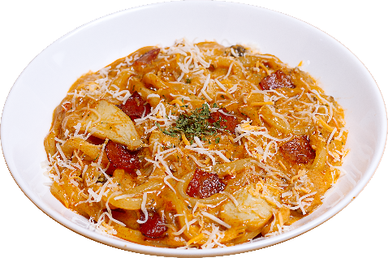
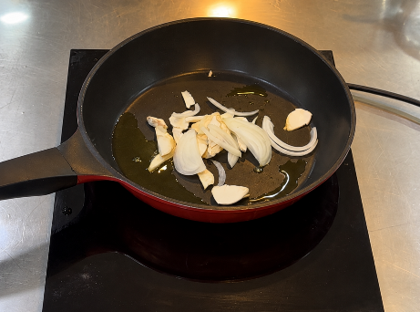
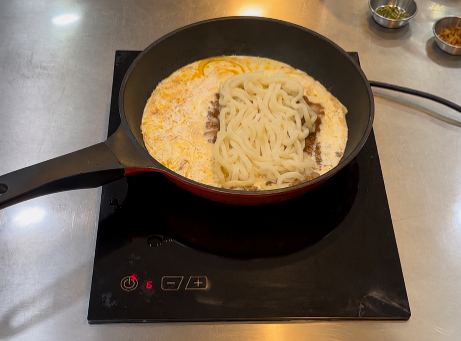
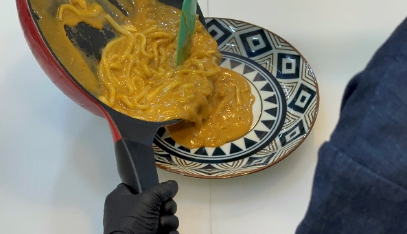
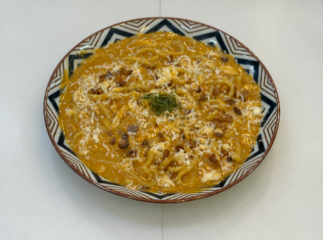

| 메뉴명 | 베이컨 크림카레우동 |
|---|---|
| 판매가격 | 8,500원 |
| 원재료 | 아이센스 비프커리, 우유, 양파, 새송이, 베이컨칩, 파슬리, 엔젤헤어치즈, 우동면, 우동장국, 식용유 |
| 사용 부자재 | 돈까스 접시 |
| 메뉴특징 | 부드러운 크림카레에 쫄깃한 우동면, 짭짤한 베이컨과 치즈의 풍미를 더한 스페셜 메뉴 |
※ 주의: 냉동 우동면을 억지로 풀려고 하면 면이 끊어질 수 있으므로 조리 시 주의한다.



